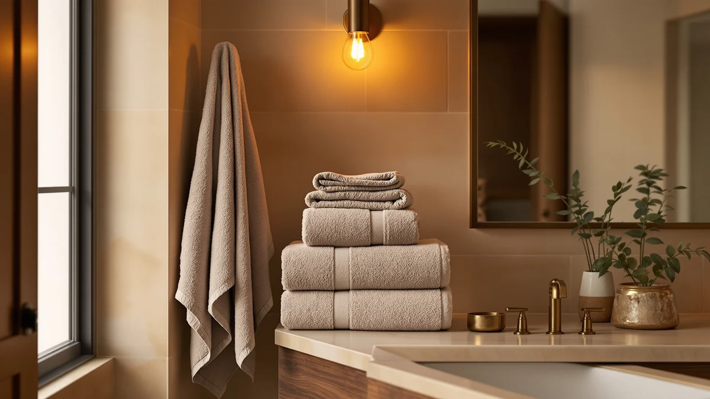

Alusa Home Ultra Soft Review (2026): Worth It?
Prices and picks verified as of October 2026. Independent, reader-supported reviews.


Quick Answer
The Alusa Home Ultra Soft set swaps cotton for 700 GSM bamboo viscose blended with zero-twist, long-staple cotton, and it carries OEKO-TEX Standard 100 certification for sensitive skin. At $99.97 for six pieces it costs more than the BAGNO MILANO Turkish cotton set below but lands close to buying two Impressions Egyptian cotton bath sheets at a matching gram weight. Buy it if bamboo's faster drying time and allergy-friendly certification matter to you; skip it if a dense, traditional cotton feel matters more than drying speed.
Our pick: Alusa Home Ultra Soft &, $99.97 Check Price on Amazon
Bottom line: our top pick is the Alusa Home Ultra Soft & Plush Viscose from Bamboo Bath Towels at $99.97.
Things to Know Before You Buy
- Alusa Home weaves the Ultra Soft set from bamboo viscose and zero-twist, long-staple cotton rather than pure cotton, which is why it markets the set as quick-drying.
- The set carries OEKO-TEX Standard 100 certification, meaning an independent lab compared the fabric against a defined list of restricted substances before the label was awarded.
- At $99.97 for six pieces, it costs about $20 more than the BAGNO MILANO Turkish cotton set at the same piece count.
- The listing doesn't show a public star rating or review count yet, so you're weighing manufacturer specs rather than a long owner history.
- If you want a traditional cotton bath sheet instead, the Impressions Egyptian cotton set covered below matches a similar gram weight.
This Alusa Home Ultra Soft review compares the brand's 700 GSM bamboo viscose towel set against three cotton competitors to see whether its quick-dry claims and OEKO-TEX certification justify a $99.97 price tag. Bamboo viscose towels get marketed as softer and more absorbent than standard cotton terry, and Alusa Home leans on that pitch with a six-piece set blended from bamboo viscose and zero-twist, long-staple cotton.
Our take: the Alusa Home Ultra Soft set earns its premium if bamboo's faster drying time and allergy-friendly certification matter to you, but it isn't the cheapest way to get a soft towel. The BAGNO MILANO Turkish cotton set below costs about $20 less for the same six-piece count, and the Impressions Egyptian cotton bath sheets match its gram weight with a heavier, more traditional feel. The breakdown below covers specs, pros, and where each alternative fits better.
Why You Should Trust Us
Ilane Tall has covered bath and home textiles for Best Bath Towels since the site launched, and focuses on how fiber type, gram weight, and certification labels translate into real bathroom performance. We do not run a physical testing lab, and we don't claim to have used every towel we cover. Instead, we research manufacturer specifications, certification details like OEKO-TEX Standard 100, verified pricing, and publicly available product data, then compare those figures directly against similar towel sets on the market. We ground this Alusa Home Ultra Soft review in that research-based approach rather than in a personal, unverifiable account of owning the towels.
Our Research Experience
We built this review by comparing Alusa Home's published specifications against the three competing towel sets covered below. That means checking gram weight, fiber composition, certification claims, set size, and price per piece side by side instead of assigning a numeric score. For the Alusa Home Ultra Soft set, we verified the 700 GSM weight, the bamboo viscose and zero-twist cotton blend, and the OEKO-TEX Standard 100 certification against the brand's own listing, then cross-checked the price against Impressions and BAGNO MILANO's comparable sets. Where a listing doesn't publish a rating or review count, as is the case here, we say so rather than inventing one.
Overview & Specs

Alusa Home Ultra Soft &
What we like
- Bamboo viscose and zero-twist cotton blend feels lighter than dense cotton terry
- OEKO-TEX Standard 100 certification confirms independent testing for restricted substances
- 700 GSM weight sits in the same range as premium Egyptian cotton bath sheets
- Odor-resistant fiber is useful in humid bathrooms with limited ventilation
Flaws but not dealbreakers
- Costs about $20 more than the BAGNO MILANO Turkish cotton set at the same six-piece count
- No public star rating or review count on the listing yet, so you're buying on specs rather than owner feedback
- Comes in white only, which shows staining faster than a darker colorway like the Impressions set
| Material | Bamboo |
| Size | 6pc Towel Set |
The Alusa Home Ultra Soft set bundles six pieces for $99.97 in white. Instead of standard cotton terry, Alusa Home builds the towels from a blend of viscose from bamboo and zero-twist, long-staple cotton, weighing in at 700 GSM. That gram weight puts it close to the premium Egyptian cotton bath sheets covered later in this review, even though it gets there with a different fiber strategy. The brand markets the bamboo viscose component as more absorbent and faster-drying than straight cotton, and that claim lines up with how viscose fibers typically behave: they carry more surface area for moisture to spread across, so towels release water back into the air faster between uses. For anyone drying towels in a bathroom without a vent fan, that difference adds up over a week of daily use.
Alusa Home also highlights the set's OEKO-TEX Standard 100 certification. An independent lab tests the fabric against a defined list of restricted substances before awarding that label, rather than letting a brand claim safety on its own. That detail matters if skin sensitivity or allergies are part of why you're shopping for a new towel set in the first place. The brand also claims the bamboo viscose fiber resists odor buildup, which would help in a bathroom with limited airflow between washes. The listing doesn't show a public star rating or review count yet, so you don't have a crowd-sourced track record to weigh against those manufacturer claims. At $99.97, the set sits above BAGNO MILANO's Turkish cotton price and close to what two Impressions Egyptian cotton bath sheets would cost at a comparable gram weight.
What We Liked
The fiber choice stands out most in this Alusa Home Ultra Soft review. Swapping cotton for bamboo viscose is a genuine point of differentiation rather than a marketing relabel, and the 700 GSM weight means the towels aren't thin despite the lighter-feeling fiber. The OEKO-TEX Standard 100 certification also carries real weight here, since plenty of competing listings claim to be hypoallergenic without independent verification behind that claim. For buyers managing skin sensitivities, that certification counts for more than a vague marketing bullet point, and it gives this set an edge the cotton alternatives below can't match on paper.
What Could Be Better
The biggest gap in the Alusa Home Ultra Soft set is price relative to its closest competitor. BAGNO MILANO's Turkish cotton set matches the six-piece count for about $20 less, and that set uses zero-twist spinning too, so shrink resistance alone doesn't explain the price gap. The listing also doesn't publish a star rating or review count, which means you can't weigh independent owner feedback against Alusa Home's own claims about softness and drying speed. White is the only color offered here, and a light towel used daily in a family bathroom will show staining sooner than the Chocolate or Navy Blue options Impressions offers.
Who Is It For?
The Alusa Home Ultra Soft set makes the most sense for shoppers who have reacted badly to synthetic softeners or dyes on cotton towels before and want a certified alternative backed by OEKO-TEX testing. It also fits anyone drying towels in a small bathroom with limited airflow, since a faster-drying fiber cuts down on musty smells between washes. If you want a dense, traditional cotton feel instead of a lighter bamboo blend, or if the roughly $20 premium over BAGNO MILANO's Turkish cotton set matters more to your budget than fiber type, one of the alternatives below is the better match for your bathroom.
Alternatives to Consider
If the Alusa Home Ultra Soft set isn't quite right for your bathroom or budget, these three towel sets cover the closest comparison points on gram weight, fiber, and price. Two come from Impressions in different colorways at the same 800 GSM Egyptian cotton weight, and one comes from BAGNO MILANO at a lower price for the same six-piece count.

Editor’s Pick
Impressions Luxury Heavyweight Egyptian Cotton
A set of two 800 GSM Egyptian cotton bath sheets in Chocolate, for buyers who want a denser, more traditional cotton feel than bamboo viscose offers.
$90.90
Check Price on Amazon
Best Value
Impressions Luxury Heavyweight Egyptian Cotton
The same 800 GSM Egyptian cotton bath sheet, in Navy Blue for a darker colorway that hides staining better than Alusa Home's white-only set.
$90.90
Check Price on Amazon
Premium Choice
BAGNO MILANO Turkish Cotton Bath
A six-piece 100% Turkish cotton set with zero-twist spinning, priced about $20 below Alusa Home's bamboo viscose set for the same piece count.
$79.95
Check Price on AmazonIs the Alusa Home Ultra Soft towel set good for sensitive skin?
Yes, based on the certification Alusa Home publishes for the set.
How does the Alusa Home Ultra Soft set compare to Egyptian cotton towels like the Impressions set?
The Alusa Home Ultra Soft set uses bamboo viscose instead of cotton, which the brand markets as faster-drying and more absorbent than Egyptian cotton.
Frequently Asked Questions
Is the Alusa Home Ultra Soft towel set good for sensitive skin?
How does the Alusa Home Ultra Soft set compare to Egyptian cotton towels like the Impressions set?
Is the Alusa Home Ultra Soft set worth $99.97 compared to the BAGNO MILANO set at $79.95?
Final Verdict
This Alusa Home Ultra Soft review comes down to fiber priorities. If bamboo viscose's quicker drying time and OEKO-TEX certification matter to you, Alusa Home's six-piece set earns its $99.97 price. If you'd rather save roughly $20 for a comparable piece count in classic Turkish cotton, BAGNO MILANO is the better buy, and if dense Egyptian cotton bath sheets in a non-white color are the priority, Impressions covers that instead. For buyers specifically chasing a faster-drying, allergy-friendly towel, Alusa Home remains the pick to beat on this shelf, and the gram weight means you aren't sacrificing thickness to get that speed.